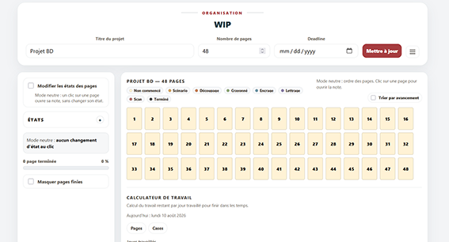
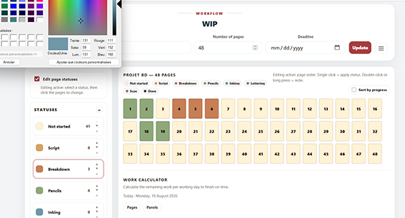
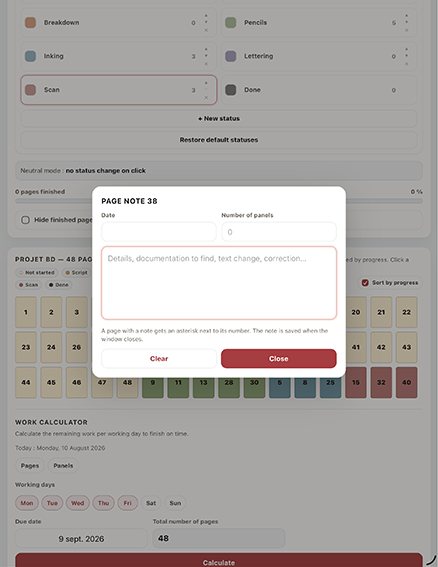
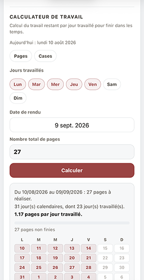
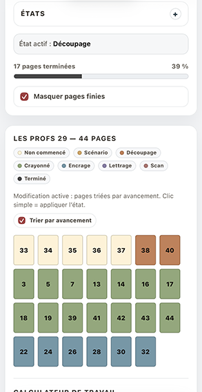
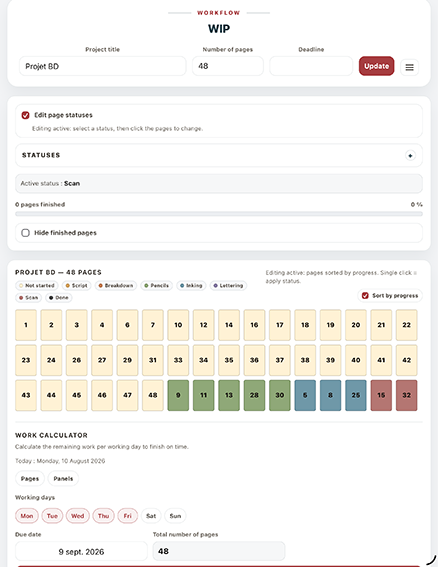

Français
Chaque page est représentée par une vignette colorée correspondant à son état de production. Les états sont personnalisables et la progression est calculée à partir des pages réellement terminées.
Eigrutel Lab · Workflow
Français : suivre l’avancement d’un projet de bande dessinée page par page, organiser les étapes de production et estimer le travail restant avant la deadline.
English: track a comic project page by page, organize production stages and estimate the work remaining before the deadline.
Version 1.0.0 · 10-08-2026
Chaque page est représentée par une vignette colorée correspondant à son état de production. Les états sont personnalisables et la progression est calculée à partir des pages réellement terminées.
Each page is represented by a colored tile matching its production status. Statuses are customizable and progress is calculated from pages that are actually finished.






Étapes de production personnalisables : noms, couleurs et ordre. Customizable production stages: names, colors and order.
Date, nombre de cases et précisions pour chaque page. Date, panel count and details for each page.
Pages terminées, pourcentage global, tri et masquage.Finished pages, overall percentage, sorting and filtering.
Charge restante en pages ou en cases selon les jours travaillés.Remaining workload in pages or panels based on selected working days.
L’échéance du projet est reprise directement par le calculateur.The project deadline is used directly by the calculator.
Sauvegarde locale automatique et import / export JSON.Automatic local saving and JSON import / export.
README · Architecture · Changelog · Notice · Licences
Code : GNU AGPL v3.0 ou version ultérieure.
Documentation : CC BY-SA 4.0, sauf mention contraire.
Marques : Eigrutel, Eigrutel Lab et Eigrutel BD Academy — signes distinctifs réservés.